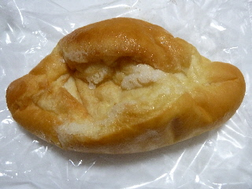
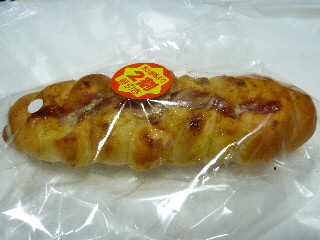
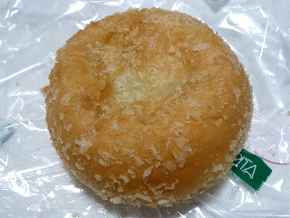
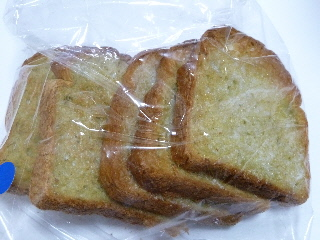
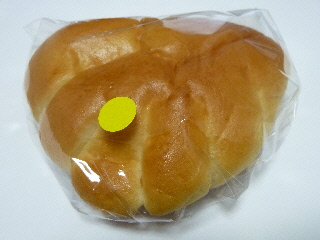
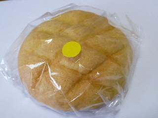
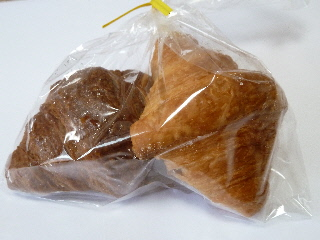
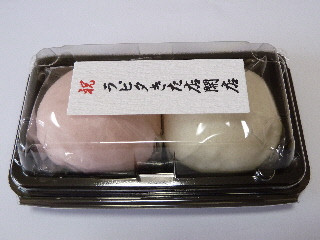

モーデ高岡店がバレンタインコーナーになっていました。
2013/01/15
ラピタ北店内にモーデ高岡店があったんですが、今日行ったらなくなっていました。
変わりにその場所にはバレンタイン用のチョコが置いてありました。
残念ですね。
サヨナラです。
ラピタきた店内
2013/01/15
ラピタ北店内にモーデ高岡店があったんですが、今日行ったらなくなっていました。
変わりにその場所にはバレンタイン用のチョコが置いてありました。
残念ですね。
サヨナラです。
2012/09/05
米粉パンだからか「もっちりシュガー」です。

ここのお店に限ったことじゃないですけど、パンで「もっちり」ってなんか違和感を感じます。
そこまで「もっちり」はしていないっていつも思っています。
2011/11/05
チーズとカレーとフランクフルトです。美味しいものが集まったパンですね。
夕方買ったので2割引きです。

それぞれの味はマイルドだったので、味が濃いとか辛いってことはなかったです。
パンが米粉パンでしっかりしているので、マイルドに感じたかもしれません。
2011/09/01
モーデ高岡店で、ライスカレーパンっていうのが販売していました。
見た目普通のカレーパンっぽいですね。

ライスカレーのライスは、米粉ぱんだから？それともお米が入ってる？どっちなんだろう？って思って買ってみました。
答えは、米粉パンだららの様です。ご飯入ってたら面白いな～って思って買ったので、ちょっとガッカリな結果でした。
でも、甘めのカレーが多目に入っていて美味しかったです。
2011/06/08
出雲市高岡町にあるラピタきた店内のパン屋さん「モーデ高岡店」のラスクです。

ラスクっていうとサクサクした食感を思うんですが、ここのはちょっとしっとり感があしました。なんか新食感なラスクです。
カリカリになる前のラスクで、半生？みたいでした。
柔らかいので食べやすいです。こなが落ちないのはいいですね。歯にもやさしいです。
砂糖が沢山付いてるので、噛んだときにジュワっと甘さが広がって美味しかったです。
2011/05/01
お米パンのジャムパンです。

ジャムがパンのセンターから外れてて、ちょっと残念でした。
でも、なかなか美味しいパンでした。
パン自体が甘めだったので、ジャムとの相性が良かったです。
ちょっと気になったんですが、パンの袋に付いている黄色い丸いシールは何でしょう？
何かのサインなんでしょうか？
2011/04/29
オープンしたばっかりのラピタきた店に買い物に行きました。

オープンしたばっかりだったので、お店にパンがあんまり置いてありませんでした。
その中からメロンパンを選んで買いました。
お米パンらしく？ふっくらとしていなくて、米粉がギュっと詰まった感じがするなって思いました。

先着でもらえたクロワッサンです。これも米粉パンで、パンを噛み切るときにしっかりとした歯ごたえがありました。

これも先着で貰えたお饅頭です。
今日はメロンパン1個でプレゼントが2つもらえてとってもお得な日でした。
ラピタきた店内で、元いしかわ高岡店があった場所です。以前はパン屋さんのベルクさんが入っていました。